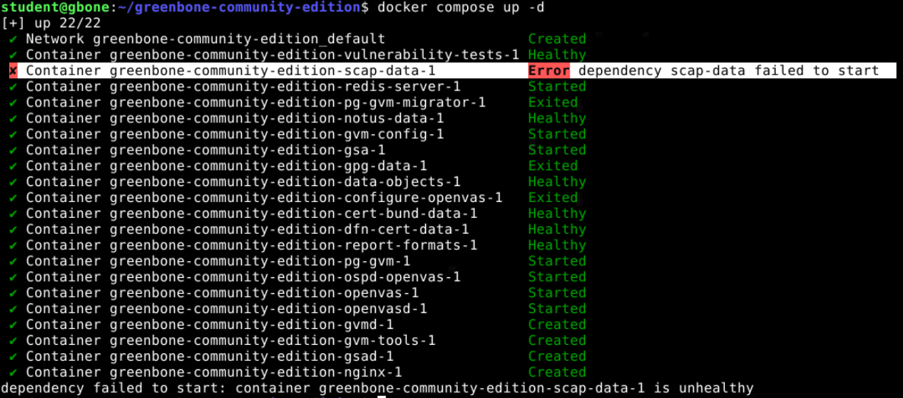
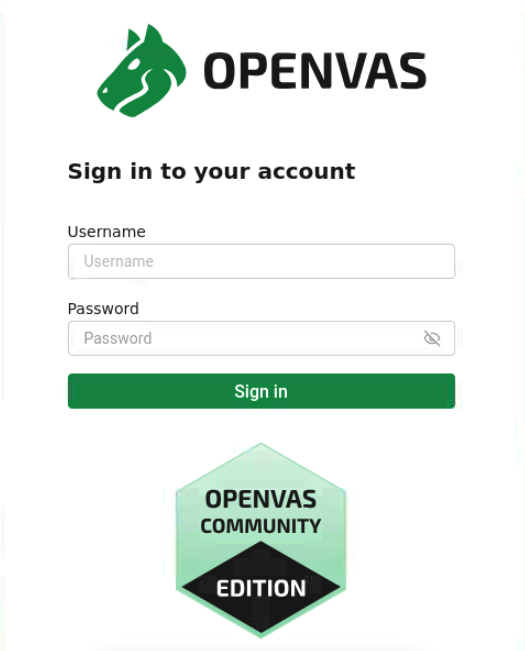
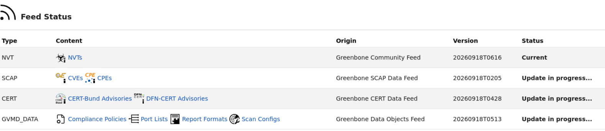
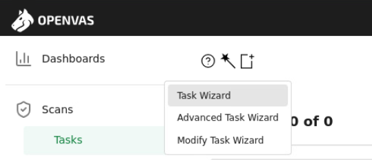

Praktiline töö: Greenbone Community Edition (OpenVAS)¶
Eesmärk¶
Praktilise töö eesmärk on õppida paigaldama ja kasutama Greenbone Community Editioni haavatavuste skannerit, skaneerima üksikut võrguseadet ja alamvõrku ning analüüsima leitud turvanõrkusi.
Töö käigus õpid:
- paigaldama ja käivitama Greenbone Community Editioni konteinerites;
- kontrollima konteinerite ja Greenbone'i teenuste olekut;
- kasutama Greenbone Security Assistant veebiliidest;
- skaneerima üksikut IP-aadressi ja tervet alamvõrku;
- hindama skannimise tulemusi ja haavatavuste tõsidust;
- leidma haavatavuse kirjelduse ja soovitatud parandusmeetmed.
Oluline
Skaneeri ainult süsteeme ja võrke, mille skaneerimiseks on sul luba. Selles praktilises töös kasuta ainult selleks ette nähtud laborivõrgu virtuaalmasinaid.
1. Debian virtuaalmasina ettevalmistamine¶
Greenbone Community Edition käivitatakse selles töös Dockeri konteinerites.
Paigalda kooli laborikeskkonda Debian 13 virtuaalmasinat, millel on võrgukaardiks "Internet".
Virtuaalmasina nimeks "greenbone-sinunimi"
Soovituslikud ressursid:
Ressurss Soovitus
CPU 4 vCPU Mälu 8 GB RAM Kõvaketas 150 GB Operatsioonisüsteem Debian 13
Miks on vaja nii palju kettaruumi?
Greenbone'i konteinerid, haavatavuste andmebaasid ehk feed'id ja skannimise tulemused vajavad märkimisväärselt kettaruumi. Varasemast 16 GB kettast ei piisa.
1.1. Uuenda Debian¶
2. Docker Engine'i paigaldamine¶
2.1. Paigalda vajalikud paketid¶
2.2. Lisa Dockeri ametlik repositoorium¶
Loo võtmete kataloog:
Laadi alla Dockeri allkirjastamisvõti:
Anna võtmele lugemisõigus:
Lisa Dockeri repositoorium:
sudo tee /etc/apt/sources.list.d/docker.sources <<EOF
Types: deb
URIs: https://download.docker.com/linux/debian
Suites: $(. /etc/os-release && echo "$VERSION_CODENAME")
Components: stable
Architectures: $(dpkg --print-architecture)
Signed-By: /etc/apt/keyrings/docker.asc
EOF
Uuenda pakettide nimekirja:
2.3. Paigalda Docker¶
Kontrolli Dockeri versiooni:
Kontrolli Docker Compose'i versiooni:
2.4. Lisa kasutaja gruppi docker¶
Muudatuse rakendamiseks logi Debianist välja ja uuesti sisse.
Pärast uuesti sisselogimist kontrolli, kas Docker töötab:
Kui näed teadet Hello from Docker!, töötab Docker korrektselt.
3. Greenbone Community Editioni paigaldamine¶
Greenbone Community Edition koosneb mitmest teenusest, mis käivitatakse eraldi Dockeri konteinerites. Nende haldamiseks kasutatakse Docker Compose'i.
3.1. Loo Greenbone'i kataloog¶
3.2. Laadi alla Greenbone'i Compose-fail¶
curl -f -O -L \
https://greenbone.github.io/docs/latest/_static/compose.yaml \
--output-dir "$DOWNLOAD_DIR"
Kontrolli, kas fail on olemas:
Kataloogis peab olema fail:
4. Greenbone'i konteinerite allalaadimine¶
Liigu Greenbone'i kataloogi:
Laadi konteinerid alla:
Info
Allalaadimine võib võtta mitu minutit ja vajada mitu gigabaiti kettaruumi.
5. Greenbone'i käivitamine¶
Käivita Greenbone:
Esimesel käivitamisel võib mõni konteiner vajada rohkem aega
Greenbone'i esmakordsel käivitamisel valmistatakse ette ja imporditakse haavatavuste andmeid. Seetõttu võib juhtuda, et mõni andmekonteiner, näiteks scap-data, kuvatakse alguses olekus unhealthy ja käivitamine peatub teatega dependency failed to start.

Kui saad vea anna natuke aega ja käivita uuesti:
Kontrolli konteinerite olekut:
Greenbone koosneb mitmest konteinerist, seega on normaalne, et nimekirjas kuvatakse palju teenuseid. Vaata et kõigi konteinerite staatus oleks "Up".
Probleemide korral vaata logisid:
Logide jälgimise lõpetamiseks vajuta:
Kasulikud käsud
Greenbone'i saab hiljem käivitada käsuga:
Peatamiseks kasuta:
6. Administraatori parooli muutmine¶
Greenbone'i administraatori kasutajanimi on:
Määra administraatorile uus parool:
docker compose -f "$DOWNLOAD_DIR/compose.yaml" \
exec -u gvmd gvmd gvmd \
--user=admin --new-password='SINU-TURVALINE-PAROOL'
Asenda SINU-TURVALINE-PAROOL enda valitud parooliga.
7. Greenbone'i veebiliidese avamine¶
Ava oma Greenbone serveri veebibrauseris Greenbone'i HTTPS-aadress (kuna asub samas masinal saame kasutada aadressi 127.0.0.1)
Logi sisse:
- kasutaja:
admin - parool: eelmises sammus määratud parool
Sertifikaadihoiatus
Laboris kasutab Greenbone ise allkirjastatud TLS-sertifikaati. Seetõttu võib brauser kuvada sertifikaadihoiatuse. Ignoreeri seda praegu ja liigu edasi saidile.

8. Greenbone'i feed'ide kontrollimine¶
Greenbone vajab haavatavuste tuvastamiseks ajakohaseid andmebaase ehk feed'e.
Veebiliideses ava:
Administration → Feed Status
Pärast Greenbone'i esmakordset käivitamist toimub andmete laadimine ja importimine automaatselt.

Ära alusta skannimist liiga vara
Enne esimese skanni tegemist oota, kuni vajalikud feed'id on alla laaditud ja töödeldud. Esmane sünkroniseerimine võib võtta kaua aega, isegi tunde. Lase maisnal töötada mõnda aega ja tule siis labori juurde tagasi.
Puuduliku feed'i korral ei ole Greenbone'i haavatavuste andmebaas täielik ning skannimise tulemus ei pruugi olla usaldusväärne. Oota ära kuni feed sünkroniseerimise lõpetab.
9. Ühe kohtvõrgu masina skaneerimine¶
Kui feedid on uuendatud, siis saame skaneerimisega alustada.
Kõigepealt skaneerid ühte kooli laborivõrgu virtuaalmasinat.
Sobivaks sihtmärgiks võib olla näiteks sinu enda Zabbixi või mõni muu õpetaja lubatud virtuaalmasin.
Skaneeri ainult lubatud süsteeme
Ära sisesta sihtmärgiks suvalist Internetist leitud IP-aadressi või domeeninime.
- Ava Greenbone'i veebiliides.
- Navigeeri Scans → Tasks.
- Ava Task Wizard.
- Sisesta skaneeritava laborimasina IP-aadress.
- Käivita skaneerimine.
- Oota, kuni skann on lõpetanud.

Skannimine võib sõltuvalt sihtmärgist võtta mitu minutit.
10. Ühe masina skanni tulemuste analüüsimine¶
Ava lõpetatud skanni raport.
Tutvu leitud tulemustega ning vasta kirjalikult järgmistele küsimustele:
- Millist IP-aadressi skaneerisid?
- Mitu turvaleidu Greenbone tuvastas?
- Milliseid Severity tasemeid tulemustes esines?
- Milline oli kõige kõrgema CVSS/severity väärtusega leid (kui samal tasemel on mitu leidu, vali üks)?
- Mis oli selle leiu nimi?
- Kirjelda oma sõnadega, milles probleem seisneb.
- Millist lahendust või parandusmeedet (Solution) Greenbone soovitab?
Severity ja CVSS
Greenbone kasutab leidude tõsiduse hindamisel CVSS-põhist skoori. Mida suurem skoor, seda tõsisemaks hinnatakse võimalikku turvariski. Kõrge skoor ei tähenda siiski automaatselt, et süsteemi saab kindlasti rünnata -- tulemusi tuleb alati analüüsida kontekstis.
11. Alamvõrgu skaneerimine¶
Järgmisena skaneerid ühe IP-aadressi asemel tervet kooli laborivõrgu alamvõrku.
Selles ülesandes kasutatav alamvõrk on:
Hoiatus
Vaata, et sisestaksid alamvõrgu korrektselt, teisi võrke skannerrida ei tohi!
Käivita skaneerimine:
-
Ava Scans → Tasks.
-
Ava Task Wizard.
-
Sisesta sihtmärgiks:
-
Käivita skaneerimine.
-
Oota, kuni skann on lõpetanud.
Info
Terve /24 alamvõrgu skaneerimine võtab märgatavalt rohkem
aega kui ühe IP-aadressi skaneerimine.
12. Alamvõrgu skanni tulemuste analüüsimine¶
Ava lõpetatud skanni raport ja vasta kirjalikult:
- Mitu aktiivset hosti Greenbone leidis?
- Milliste hostide juures tuvastati turvaleide?
- Millise hosti juures tuvastati kõige rohkem turvaleide?
- Kas erinevate hostide juures esines samu haavatavusi või probleeme? Too üks näide.
- Milline oli kogu alamvõrgu kõige kõrgema severity-väärtusega leid?
13. Mõtle ja võrdle¶
Vasta oma töö lõpus lühidalt järgmistele küsimustele.
Haavatavuse skanneri kasulikkus¶
Milleks võiks süsteemiadministraator Greenbone'i organisatsiooni võrgus kasutada?
Tulemuste tõlgendamine¶
Kas Greenbone'i leitud kõrge severity-väärtusega probleem tähendab alati, et süsteemi on võimalik kohe edukalt rünnata? Põhjenda lühidalt.
Avalike teenuste skaneerimine¶
Haavatavuste skaneerimine tekitab sihtsüsteemile aktiivset võrguliiklust ja võib olla käsitletav turvatestimisena.
Ära skaneeri suvalisi Interneti-teenuseid
Skaneeri ainult süsteeme ja võrke, mille skaneerimiseks on sul selge luba.
Ära sisesta Greenbone'i proovimiseks suvalisi:
- avalikke IP-aadresse;
- veebiservereid;
- ettevõtete servereid;
- kooliväliseid võrke;
- domeeninimesid.
Turvatestimise õppimiseks saab kasutada spetsiaalselt selleks loodud harjutuskeskkondi ja haavatavaid virtuaalmasinaid, näiteks Hack The Boxi või VulnHubi keskkondi. Ka nende puhul tuleb järgida konkreetse platvormi kasutustingimusi ja lubatud testimise piire.
Töö esitamine¶
Esita töö ühe PDF-failina.
PDF peab sisaldama järgmisi kuvatõmmiseid:
- Greenbone'i veebiliides, kuhu oled administraatorina sisse loginud.
- Administration → Feed Status vaade, millest on näha feed'ide olek.
- Ühe IP-aadressi lõpetatud skanni tulemus.
- Alamvõrgu
172.16.200.0/24lõpetatud skanni tulemus. - terminalis
docker pskäsu tulemus koos käsureal nähtava masina nimega.
Lisaks peavad PDF-is olema vastused peatükkide küsimustele:
- Ühe masina skanni tulemuste analüüsimine;
- Alamvõrgu skanni tulemuste analüüsimine;
- Mõtle ja võrdle
Töö tulemus
Kui oled ülesande lõpetanud, oskad paigaldada Greenbone Community Editioni, käivitada haavatavuste skanne ning teha skannimise tulemustest esmase turvaanalüüsi.